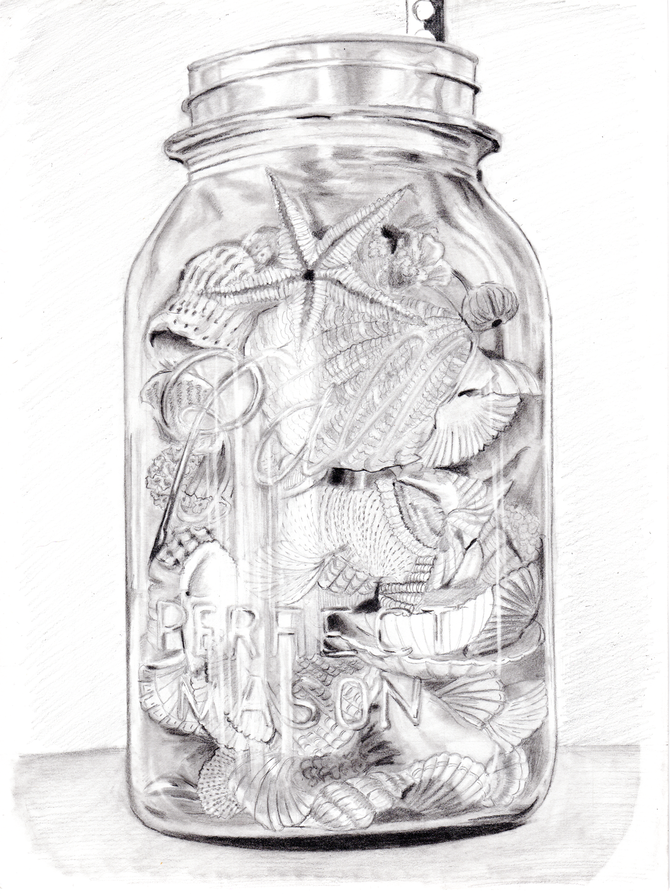
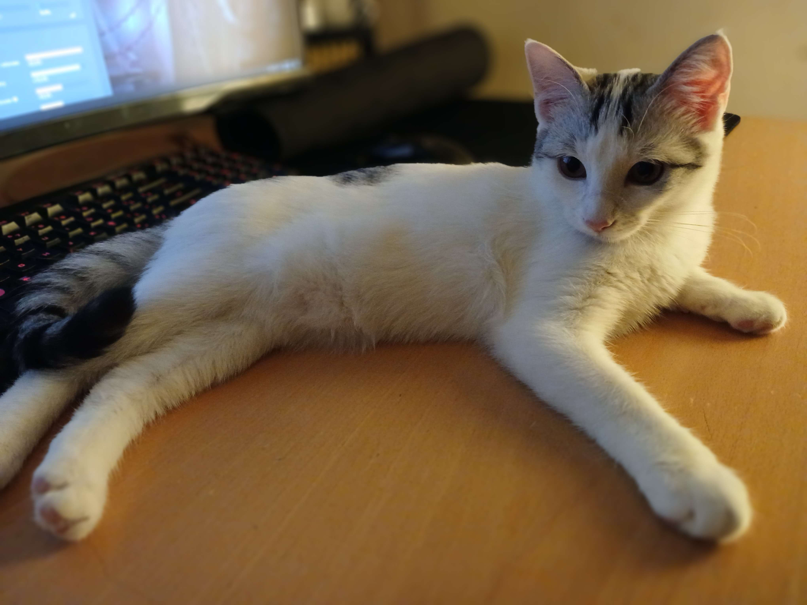
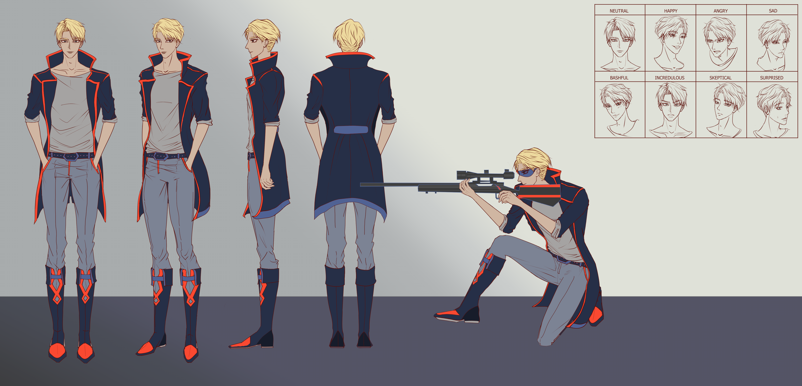
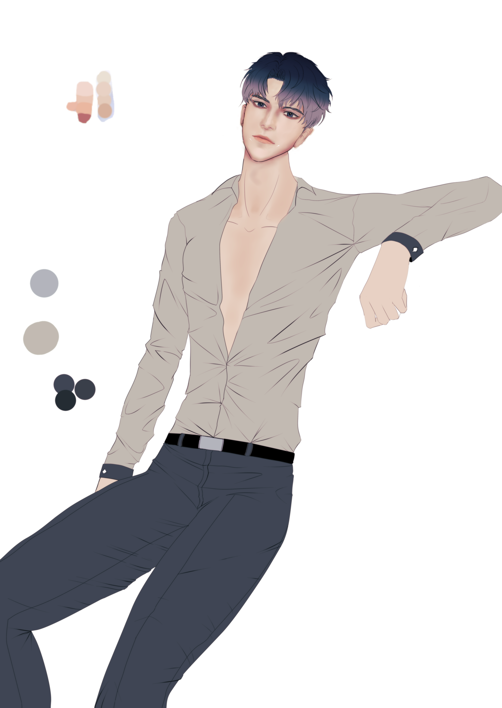

Pencil Sketch

A traditional pencil drawing exploring form, detail, and expression.
Art is a simple signal: an idea communicated visually.
I am an artist interested in illustration and visual storytelling. I enjoy exploring different techniques and styles, from traditional pencil sketches to digital artwork. What inspired me to become an artist was being exposed to art class when I was in elementary school. Ever since I was young, I had always enjoyed working on creative things. I remember attending my first art class and how we worked with newspaper as papier-mâché to make a mask and painted it with acrylic paint. Transforming something that signals one object into something signaling something entirely different fascinated me. It was a transformative experience to take that one simple signal and have it broadcast and interpreted as an entirely different signal by filtering it through my artistic lens. That is why I decided to become a manhwa artist. I wanted to communicate my intricate inner world of simple signals into something that others could experience, see, and understand. Once I accumulate enough art I will create an account on Artstation. I would recommend anyone who is interested to do the same! ArtStation.
| Mediums I Work With: | What I use it for: |
|---|---|
| Pencil | Sketching and drawing |
| Acrylic paint | Painting and physical artwork |
| Digital painting | Illustration and character design |
| Nuke 3D | Video compositing |


A traditional pencil drawing exploring form, detail, and expression.

An original character design exploring appearance, clothing, poses, and facial expressions.

A work-in progress cover illustration exploring character design, composition, and visual storytelling.
To get in touch with me, feel free to send a message below.